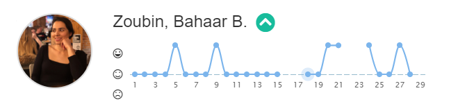

In het begin van dit semester wist ik niet zo goed wat mij te wachten stond. De eerste les hebben we kennis gemaakt met ons proftaakgroepje en moesten wij beginnen met sprint 0. Sprint 0 was de Artistic exploration. Ik wist niet zo goed wat het was en wat wij moesten doen. Eenmaal toen ik begonnen was, had ik best wel een trage start omdat ik te veel nadacht bij wat ik deed. Toen heeft Haran mij als feedback gegeven dat ik best wel minder mag nadenken maar meer mag doen. Ik heb deze feedback opgepakt en heb echt in een/twee dagen ongeveer 40 moodboards gemaakt. Aan het einde van de sprint had ik goede feedback ontvangen, van dat mijn moodboards zonder tekst te begrijpen zijn. In sprint 1 ben ik voornamelijk bezig gegaan met het ontwerpen van het logo. Hier ben ik in het begin ook teveel gaan nadenken, totdat ik een pen en papier had gepakt en gewoon maar ben gaan tekenen. Uiteindelijk heb ik wel wat logo's gemaakt. Het leukste logo vond ik degene met de ster bij de letter A. In sprint 2 zijn we bezig gegaan met poster design en 3D models. Deze sprint is wel mijn highlight. Beide producten zijn super goed gelukt. Verder in sprint 3 heb ik de poster afgemaakt en ben ik bezig gegaan met de AR animatie voor de poster. Ook hebben we tijdens dit semester een Selfieweek gehad. De selfieweek vond ik ook erg leuk omdat het een persoonlijk verhaal heeft. Ook met het resultaat en feedback ben ik erg blij. In semester 2 hebben we ons ook moeten richten op development. Dit vond ik best moeilijk. Doordat ik het moeilijk vond, was ik er niet al te enthousiast over. Ik wil mij in het volgende semester meer verdiepen in development, dat ik dit later ook goed kan beheersen. Momenteel ken ik de basis van JavaScript, HTML en CSS. Ik heb daarom ook een simpele portfolio gemaakt.
Dit semester ben ik erachter gekomen dat het stukje Design mij het meeste aanspreekt. Ik vind Branding ook super leuk om te doen. In de toekomst zou ik hier ook graag iets me willen doen. Ik ben tevreden over hoe ik dit semester heb gepresenteerd. Ik heb goede feedback gekregen en heb mooie/leuke dingen gemaakt. Hieronder is mijn feedpusle-lijn te zien. Hebben jullie nog vragen of opmerkingen? Bewaar die dan voor vrijdag tijdens het assesment!
